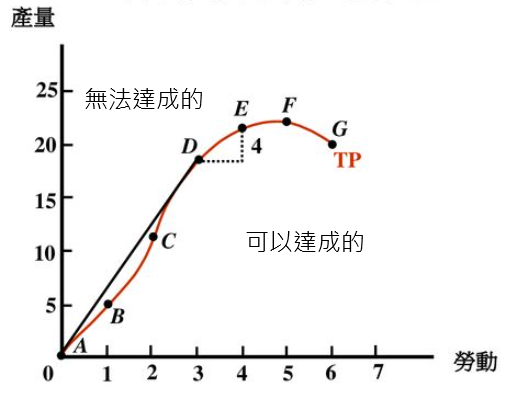
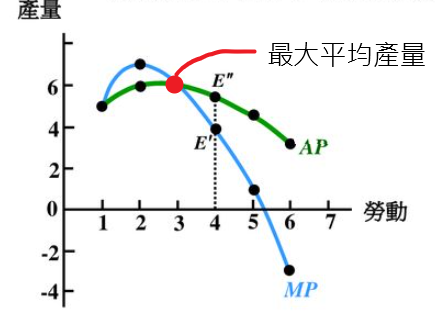
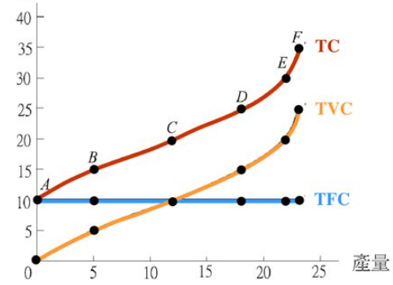
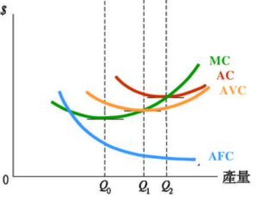
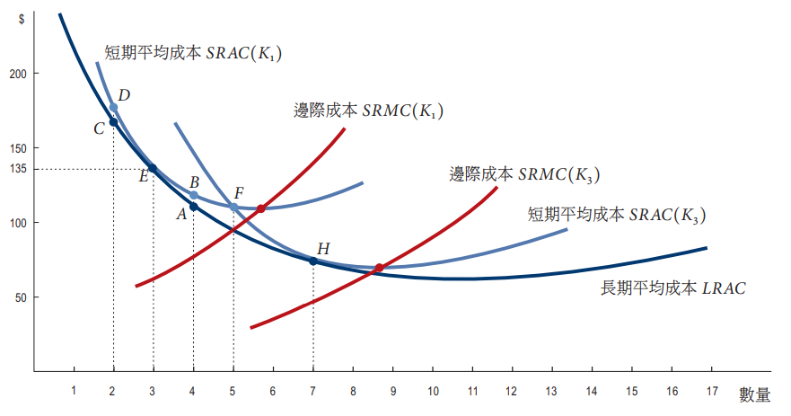

陳杰龍的筆記網站
陳杰龍的筆記網站 主頁
主頁 歸檔
歸檔 分類
分類 其他
其他 關於我
關於我 10.產出與成本
10.產出與成本
筆記說明
此筆記用途在於國立屏東大學資訊管理系大三上經濟學重點整理
並非所有人都適用
如果有侵犯到版權的問題在聯繫我，再聯絡我，我在移除
並非所有人都適用
如果有侵犯到版權的問題在聯繫我，再聯絡我，我在移除
決策時間長短
- 短期
- 指的是至少有一種生產要素其數量是固定的期間
- 生產要素
- 變動生產要素(勞動)
- 固定生產要素(資本、土地與企業)
- 增加產量必須增加變動生產要素，反之
- 長期
- 指的是所有生產要素的數量都可以變動的期間
- 增加產量可增加機房設備或勞動，反之
- 長期決策通常不容易逆轉
短期技術限制
- 總產量(TP)
- 廠商在該勞動雇用量下的最大產出水準

- 廠商在該勞動雇用量下的最大產出水準
- 邊際產量(MP)
- 廠商在其他生產要素雇用量不變下，它多雇用一單位的勞動所造成的總產量的增量

- 邊際報酬遞增：廠商所雇用的下一名勞工其邊際產量大過上一名勞工的現象，反之
- 報酬遞減法則：給定固定生產要素的數量，當廠商增雇某一變動生產要素時，該生產要素的邊際產量終究會遞減
- 廠商在其他生產要素雇用量不變下，它多雇用一單位的勞動所造成的總產量的增量
- 平均產量(AP)
- 顯示勞工的平均生產力，總產量/勞動雇用量

- 顯示勞工的平均生產力，總產量/勞動雇用量
短期成本
- 總成本(TC)：雇用所有生產要素的成本
- 總固定成本(TFC)：廠商的固定生產要素的成本（機房、租金）
- 總變動成本(TVC)：廠商的變動生產要素的成本（勞動）
- TC = TFC + TVC

- 邊際成本(MC)
- 產量增加一單位時，其總成本的增量
- 平均總成本(ATC)
- 平均固定成本(AFC)
- 平均變動成本(AVC)
- ATC = AFC + AVC

- 短期成本影響因素
- 技術：技術進步，邊際產量與平均產量增加，生產成本降低，成本曲線往下移
- 生產要素價格：固定生產要素價格上漲，TFC、AFC曲線往上移，而讓TC、ATC曲線也往上
變動生產要素價格上漲，TVC、AVC與MC曲線往上移，TC、ATC也往上，TFC、AFC不變
- 廠商的長期成本決定於生產函數
- 長期平均總成本曲線(LRAC)
 - 規模經濟：LRAC曲線是負斜率
- 規模不經濟：LRAC曲線是正斜率